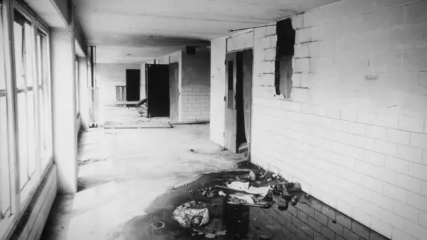
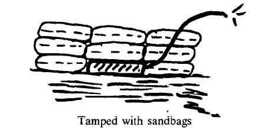
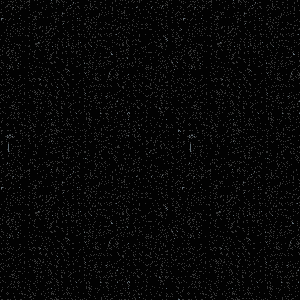

Demolition

we are ten miles from nowhere, one hundred south from somewhere. the thing about walking this far out is that eventually the walls just stop. there's no gradual decrease, just one moment there are buildings one hundred storeys tall and one moment there is an amphitheatre of grass cut in half by a road. we are fifteen minutes into the grass until we see it, the structures again that jut out from the grass like stalagmites. they're about twenty times shorter than the buildings in the city proper, only about four stories instead of the usual hundred. but it's all the same. they just stand alone here instead of their usual herd of one million.
these?
yeah, these.
there's five of them. they are a gray i've known my entire life. the grass is a dead yellow. maybe five or six people have walked inside these buildings in the past year. there is a road leading to the entrances of all five, and there are about seven hundred spaces for parking in each building. it is rectangles upon rectangles. we head inside one of the carparks and make our way to the roof.
hand me it.
alright. did you bring enough?
we'll see.
he hands me the bag.
these aren't the ones we usually use.
i went somewhere different this time. got this shit discounted.
the interior is falling apart. piles of rubble are neatly shattered into squares. cracks in the walls do not spread through the concrete, they are uniform and consistent, directly moving from one point to another. an entire rectangular patch of concrete is missing, you can see the moon through it. the paint on the floor is not chipped. the air feels denser. from the view on top of the roof, i look up and see the slowly dying sun fade downwards. it is quiet and cold.
as long as it works.
i'd hope so.

i take the sticks out and they're warm to the touch and firm, and coat my hands in a thin layer of black powder. i look back at him and he's kicking the smooth rubble on the ground idly. he takes one out of the 5 jerry cans he brought and gets to work, walking to the opposite end of the car park. we brought the sandbags on wheelbarrows, and it's at least two hours of work to get it all set up. we get to work.
shit's heavy.
mhm.
the hours pass. everything is set up. the sun is long dead. i am tired and we have walked at least 200 metres away from the buildings, lying down prone behind a large concrete barrier in an empty field. the yellow grass circles around the carparks in at least a radius of a mile. there is a dead bird hanging limp in the air. we grab it from out of the air and bury it.
ready?
the detonator's in his hands. he handles it with none of the care a detonator demands.
yeah.
lie back down.
i lie back down.
here we go.
it is nothing for about ten seconds, and then it goes. the sky flashes red from the force of it all. the fire bursts first, and then the dynamite, and chunks of concrete crash into the fields like asteroids. the black of the sky comes violently alive. it is loud and it is everything, and it is joy, and i peek out from the concrete barrier and for the first time i can see the clouds. i see men with tendrils for arms and entire eyes for heads melt, and it is good. it calms me. it is the low, violent death roar of a being that was never alive and it crackles and bursts and screams in no human way. i look again and the monsters that crawl out the windows vanish as they die. a kindness to myself. i turn to look at him and he's just looking, as he always does, never at me, always at something else.

you know, i still don't know why you do this. i know why i do, but i don't know why you do.
i don't know why you do either.
do you get off on it?
the question makes me feel bad. i laugh it off.
no, man. do you?
a little, maybe. but that's not the full point.
what is the full point?
it's just, evil, you know?
evil?
there is so much evil that happens in buildings like this, it's an evil you never see but it's still there.
no one's ever in there. how can evil happen in there?
not like, not literally. but
symbolically?
not symbolicallly either. like it's not the one thing that's wrong with everything but it's close. and it's not good. it's just not good for people to be here surrounded by all of this.
i look at him, or the back of his head, as he stares onwards again. the perfectly aligned grids of windows have been disrupted now, a huge hole punched through the outside and cracks spreading out like roots. it's nice.
i'm not seeing the correlation.
it's hard to explain. i really just can't. but i think it. and it's just what God would've wanted.
i mean i don't necessarily disagree i just think i see it different. they're there and that's kind of the end of it. they're not inherently evil.
is there a difference? between something that just happens to be evil compared to something that is evil to its core?
what do you mean by evil?
he gestures vaguely.
you know, evil.
evil.
mhm. exactly.
do you think you're like, making a difference? a noticeable dent in the evil?
well, i'm just one person. it's more about the doing itself, like, the energy.
i guess. i can't really explain why i do this either.
i told you so you have to tell me now.
mm.
you gotta.
he turns to me and he's got this excited little smile on his face. it's nice too.
it just calms me down. i just see shit that isn't there sometimes and when i do this i don't.
what kind of shit do you see?
mm. when it's late at night and it's dark it's just people that aren't there and something's a little off with them.
interesting.
and i always think they're trying to kill me.
is it just that or some other things?
mostly that, i dunno. sorry i don't usually tell people about this.
he bends down, picks up a piece of rubble that got shot out from the carpark exploding. the rubble is jagged and irregular, it is a shape that has never existed before and is now born. it fits comfortably in his hands, he tosses it up a few times like a pitcher warming up and throws it straight towards nothing in particular. when the concrete piece lands he finds another and does the same thing again. it's nice as well, the way he moves.
what are you aiming at?
maybe if i get lucky i'll hit one of those people that are trying to kill you.
the fire has died down to a smolder. we start walking back. the moon looks beautiful tonight.
so when'd it start?
since i was eight maybe.
are they always in the city?
mostly, not always. i saw some earlier. when we were doing it.
oh?
yeah. they were in the fire and they were burning alive.
so that calms you down?
essentially.
mm. it's alright. my father was the same mostly.
really?
he wasn't there by the time i was ten. i never really knew him.
wasn't there or wasn't there wasn't there.
wasn't there wasn't there.
just as easily as the city went away it comes back again. no slow ease, no suburban sprawl surrounding, just a hard line of nothing and then something. we cross the border and the buildings surround us again. it feels familiar. ten dead birds hang in the air again. a crow, three pigeons, six i don't recognize. they're too many to bury and there's no grass near. we just walk past.
he'd start hitting the counters with a frying pan. he was convinced something was there. we could never see what he was trying to hit. are you like that?
no, well. what do you think? do you think when he was hitting the counters, that something really was there and you just couldn't see it?
i can't say. i know he did see something, and i think that's good enough.
mm. i never really needed to do it in that way, do stuff like that.
stuff like that?
direct violent action.
isn't that what this is?
well, he's to some extent right, some extent wrong, and i don't have the words to explain it to him yet. it's not like that.
i mean, whatever helps you deal with it and all.
shrug. it is dark and the road is too thin and it is flanked by towers that fully block the sky. the moon is gone now. there is about 30 seconds of a pause i am desperate to break but cannot. he breaks it.
it's a bitch.
it's not so bad. what's worse is how people react, you know.
yeah?
yeah. i try not to tell many people. they think i'll kill them.
i don't think you'd kill me. i'd overpower you pretty easily if you tried. you don't have that wolf in you.
i think i could. if i put my mind to it. if i believed.
i've got strong bones.
you couldn't kill a dog.
yeah i could. i could kill a dog that's the size of you.
i don't think you could kill a dog that's the size of me. it would be a big dog. it would be strong.
it would naturally fear me. i've got wolf energy.
i'm sure.
Birds